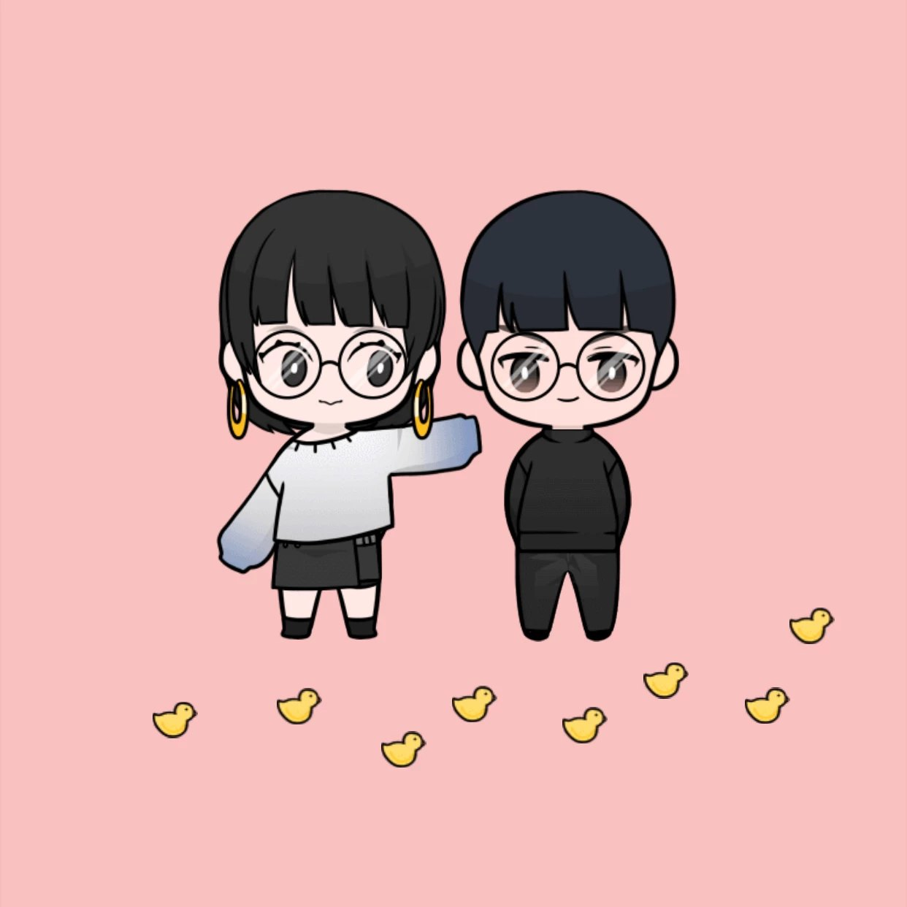

哈囉你好貓
這裡是最愛貓人士媽媽我哦❤️
今天是一隻乖乖貓的2+3歲生日，也是媽媽養貓的第四年哦
祝我的寶貝貓生日快樂❤️❤️❤️
這是我們一起度過的第四個愚人節生日，往後的每一年我們也都一樣會這樣一起過生日哦知道嗎！
雖然媽媽今年迷有辦法抱貓親貓當面跟你說生日快樂，但是媽媽愛貓的心意一點都沒減，
每天都在想貓貓愛貓貓是的就是媽媽我餒，只要有你這隻寶貝貓在，媽媽就啥米都不怕哦。
貓貓曾經問過媽媽理想型是啥米樣子對不對！媽媽的理想型就是你這隻呆萌貓啊，知道嗎！
因為對媽媽來說的理想型就是能夠一起笑一起快樂，再一起很久很久也不會覺得有壓力的那個樣子。
媽媽最喜歡抱著你這隻小寶貝看著你笑笑的樣子，就覺得說啥米都迷有關係了，只要有你在我一直都是最幸福的哦
謝謝你這隻寶貝貓，一直對媽媽不離不棄，就算媽媽有時候會
做錯事情
，貓貓都會原諒媽媽。
最愛你這隻呆萌貓了，過來親親抱抱了你說
豪不豪啊
，希望貓貓跟媽媽再一起的時候也是最開心的。
我最愛你
了我的茹茹寶❤️❤️❤️